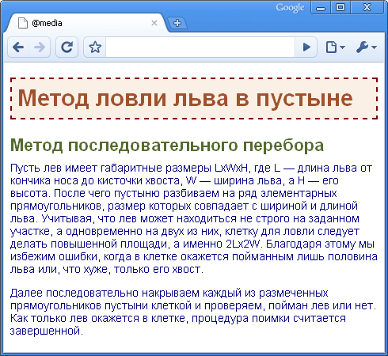
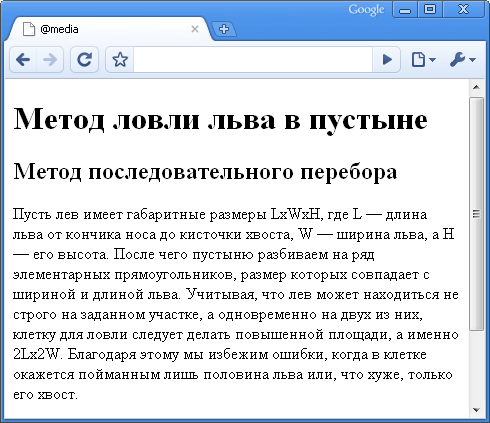

@media
Правило @media позволяет указать тип носителя, для которого будет применяться указанный стиль. В качестве типов выступают различные устройства, например, принтер, КПК, монитор и др. В табл. 1 перечислены некоторые из них.
| Тип | Описание |
|---|---|
| all | Все типы. Это значение используется по умолчанию. |
| aural | Речевые синтезаторы, а также программы для воспроизведения текста вслух. Сюда, например, можно отнести речевые браузеры. |
| braille | Устройства, основанные на системе Брайля, которые предназначены для слепых людей. |
| handheld | Наладонные компьютеры и аналогичные им аппараты. |
| Печатающие устройства вроде принтера. | |
| projection | Проектор. |
| screen | Экран монитора. |
| tv | Телевизор. |
Синтаксис
@media тип1 [, тип2] {
Описание стиля
}Значения
После ключевого слова @media идет один или несколько типов носителя, перечисленных в табл. 1; если их больше одного, то они разделяются между собой запятой. После чего следуют обязательные фигурные скобки, внутри которых идет обычное описание стилевых правил.
Пример
<!DOCTYPE html PUBLIC "-//W3C//DTD XHTML 1.0 Strict//EN"
"http://www.w3.org/TR/xhtml1/DTD/xhtml1-strict.dtd">
<html xmlns="http://www.w3.org/1999/xhtml">
<head>
<meta http-equiv="Content-Type" content="text/html; charset=utf-8" />
<title>@media</title>
<style type="text/css">
@media screen { /* Стиль для отображения в браузере */
body {
font-family: Arial, Verdana, sans-serif; /* Рубленый шрифт */
font-size: 0.9em; /* Размер шрифта */
color: #000080; /* Цвет текста */
}
h1 {
background: #faf0e6; /* Цвет фона под текстом */
border: 2px dashed #800000; /* Рамка вокруг заголовка */
color: #a0522d; /* Цвет текста */
padding: 7px; /* Поля вокруг текста */
}
h2 {
color: #556b2f; /* Цвет текста */
margin: 0; /* Убираем отступы */
}
p {
margin-top: 0.5em; /* Отступ сверху */
}
}
@media print { /* Стиль для печати */
body {
font-family: Times, 'Times New Roman', serif; /* Шрифт с засечками */
}
h1, h2, p {
color: #000; /* Черный цвет текста */
}
}
</style>
</head>
<body>
<h1>Метод ловли льва в пустыне</h1>
<h2>Метод последовательного перебора</h2>
<p>Пусть лев имеет габаритные размеры LxWxH, где L — длина льва от кончика носа
до кисточки хвоста, W — ширина льва, а H — его высота. После чего пустыню разбиваем на
ряд элементарных прямоугольников, размер которых совпадает с шириной и длиной льва.
Учитывая, что лев может находиться не строго на заданном участке, а одновременно на
двух из них, клетку для ловли следует делать повышенной площади, а именно 2Lx2W.
Благодаря этому мы избежим ошибки, когда в клетке окажется пойманным лишь половина
льва или, что хуже, только его хвост.</p>
<p>Далее последовательно накрываем каждый из размеченных прямоугольников пустыни
клеткой и проверяем, пойман лев или нет. Как только лев окажется в клетке, процедура
поимки считается завершенной.</p>
</body>
</html>В данном примере вводится два стиля — один для изменения вида элементов при их обычном отображении в браузере, а второй — при выводе страницы на печать. При этом облик документа для разных носителей может сильно различаться между собой, например, как это показано на рис. 1 и рис. 2.

Рис. 1. Страница для отображения в окне браузера

Рис. 2. Страница, предназначенная для печати
Просмотреть документ, у которого CSS установлен как тип print можно, если распечатать определенную страницу. Или пойти на хитрость и временно заменить слово print на screen, чтобы отобразить итог в браузере. Именно так был получен рис. 2.
Команда @media применяется в основном для формирования одного стилевого файла, который разбит на блоки по типу устройств. Иногда же имеет смысл создать несколько разных CSS-файлов — один для печати, другой для отображения в браузере — и подключать их к документу по мере необходимости. В подобном случае следует воспользоваться тегом <link> с атрибутом media, значением которого выступают те же типы, перечисленные в табл. 1.
<!DOCTYPE html>
<html>
<head>
<meta charset="utf-8">
<title>@media</title>
<link media="print, handheld" rel="stylesheet" href="print.css">
<link media="screen" rel="stylesheet" href="main.css">
</head>
<body>
<p>...</p>
</body>
</html>В данном примере используются две таблицы связанных стилей, одна для отображения в браузере, а вторая — для печати документа и его просмотре на КПК. Хотя на страницу загружаются одновременно два разных стиля, применяются они только для определенных устройств.
Спецификация
| Спецификация | Статус |
|---|---|
| Media Queries Level 4 | Рабочий проект |
| Media Queries | Рекомендация |
| CSS Level 2 (Revision 1) | Рекомендация |
Браузеры
| Internet Explorer | Chrome | Opera | Safari | Firefox |
| 9 | 1 | 9.2 | 1.3 | 1 |
| Android | Firefox Mobile | Opera Mobile | Safari Mobile |
| 1 | 1 | 9 | 3.1 |